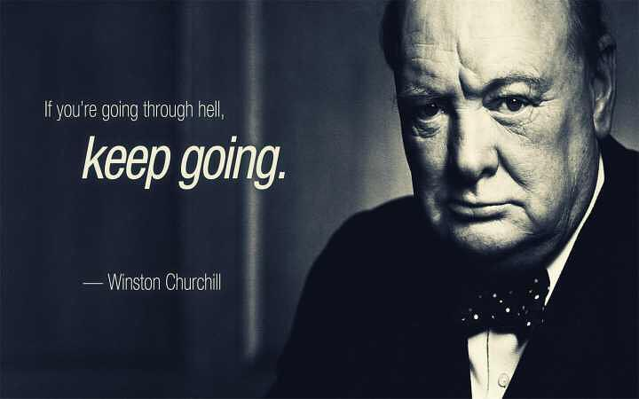

不裸聊的裸心
王福强
昨天拉团队成员开开裸心会，本意实际上是通过某种形式增进大家的互相了解，从而帮助大家在以后的工作和生活中能够相处地更加融洽， 反正泡茶还得时间呢，何况泡人？ 所以，效果姑且不表，有些个人的感触倒是觉得可以分享一些呢…
老师的重要性
很多同学都会提到一位好老师在他们人生中所起到的重要性， 甚至可以说是贵人。
很大程度上说， 小孩子有自主学习意识的很少， 大部分小孩儿往往是为了老师而学，“老师对我那么好，我一定不能辜负她/他的期望，一定要努力好好学习…”
当老师的同学们， 对你们的学生好点儿吧，说不定你的学生后面一辈子都感恩你呢~ 
煎熬与弃疗
很多同学人生阶段中都有煎熬的岁月， 只要你能熬过来，那么后面就是另一片天地， 回头看，那都不是事儿。 
但如若你放弃“治疗”，就只能继续沉沦于原有的环境中（虽然也很难说是好是坏，分人）。
现实的概率其实远远高于1/12（某位同学来上海打拼的时候同一宿舍12个人，最后只剩下他一个）。
心之所愿
心不甘，情不愿，事不会干好。
如果一个人自己心里不愿意做某件事情，你再怎么逼他其实都是没有用的，即使勉为其难去做了，也做不好，往往也没有好的结果。
两位同学的经历说明了这个命题， 包括我们Team的超级学霸，虽然用词是“政治觉悟”不高 ；）
目标感与后悔药
我们团队里老师挺多的，体制内真材实料做过老师的也有， 然后某位老师在培训班里发现的现象很有意思，那些参加工作之后来参加培训班的往往目标感很强，进步很快，而rookies却大多浑浑噩噩悠闲玩乐， 可能参加工作之后来参加培训班的都很珍惜这一后悔药吧！
只可惜人生大多数时候没有后悔药，即使有，让你回到过去也还是会重复来过，与其盼望有Save&Load的机会， 不如活好当下每一天吧！
虚岁与生肖
我们T同学有一段入学的经历， 当被问道自己几岁的时候，都说自己是7岁，但是同样是7岁的小孩儿们，却被分到了两队， 问询完毕，老师就让其中一队回去了， why？
原来，同样7岁，还有虚岁和周岁的差别，老师只追加了一个问题，就分辨出来差别， “你属啥的?”
所以， 很多东西，虽然表象可能看起来一样， 但要想真切地搞清楚， 还是需要多种因素的交叉对比。
TIPS
对比是一种最简单有效的思维模式， 欢迎阅读《深度思考揭秘》以了解更多 ；）
环境，环境，环境
人是环境的孩子：
- 你在奋发的环境里，你也会奋发，起码不会太差；
- 你在温暖的环境里，你就会有安全感；
- 你在情绪化的环境里，你就会战战兢兢如履薄冰；
- 你在惩罚性的环境里，你就会唯唯诺诺噤若寒蝉；
所以，环境很重要，而我现在关注的很多也都是环境上的细节…
「为AI疯狂」星球上，扶墙老师正在和朋友们讨论有趣的AI话题，你要不要⼀起来呀？^-^
这里
- 不但有及时新鲜的AI资讯和深度探讨
- 还分享AI工具、产品方法和商业机会
- 更有体系化精品付费内容等着你，加入星球(https://t.zsxq.com/0dI3ZA0sL) 即可免费领取。(加入之后一定记得看置顶消息呀！)

存量的时代，省钱就是赚钱。
在增量的时代，省钱其实是亏钱。
避坑儿是省钱的一种形式，更是真正聪明人的选择！
弯路虽然也是路，但还是能少走就少走，背后都是高昂的试错成本。
订阅「福报」，少踩坑，少走弯路，多走一步，就是不一样的胜率！